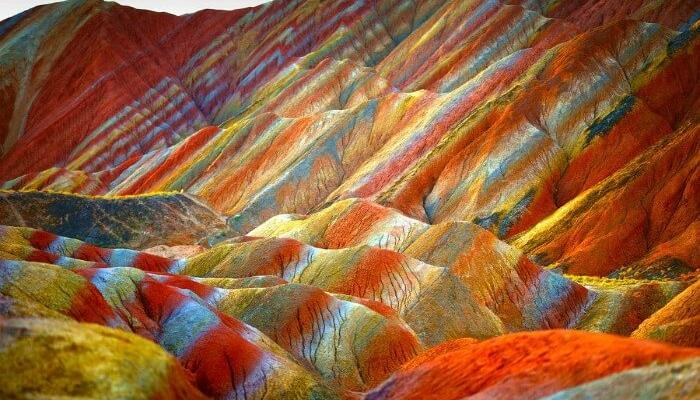
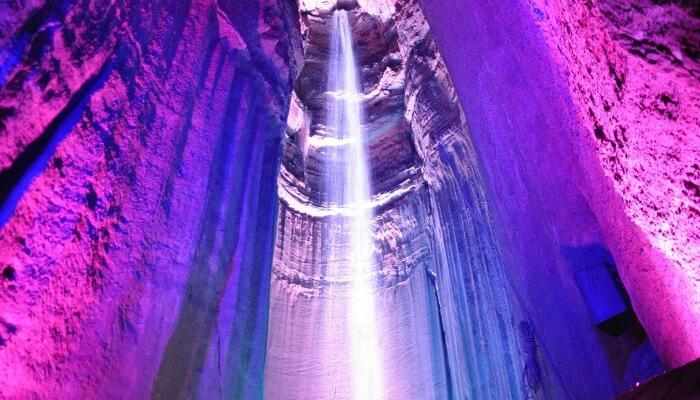
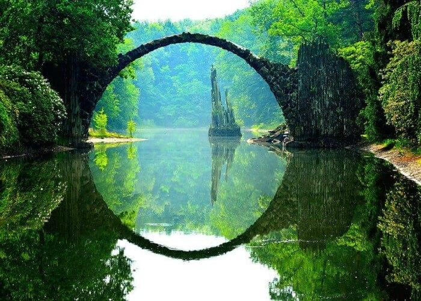
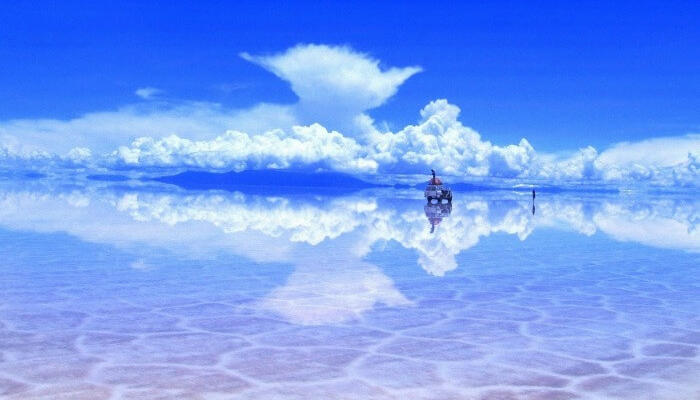
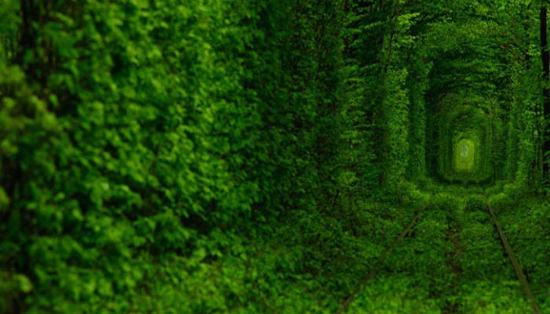
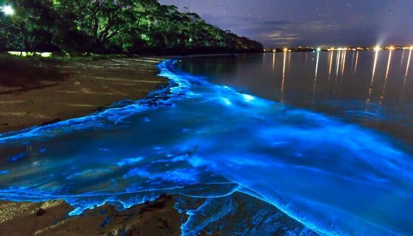

| |
Kalpna Singh
|
| Project About me contact us |
My Dream Places |
| 
Vinicunca Rainbow Mountain – Painted Picture Covered in wide lines of pastel blue, intense red, green, pink and yellow. There are currently no scientific explanations for this phenomenon. Often referred to as Vinicunca or Montaña de Siete Colores, Rainbow Mountain is a colorful peak in Peru. It is extremely difficult to reach, we will not lie. But the strenuous effort is worth the trek. |

Ruby Falls – Visit The Underground Waterfall A 145-foot high underground waterfall that is illuminated to create this lovely purplish hue. It is located within Lookout Mountain near Tennessee. They have existed for millions of years. Ruby Falls Cave features prominent cave formations like stalactites and stalagmites, columns, drapery, and flow stone. |

Die Rakotzbrück – The Nature’s Own Ring The Die Rakotzbrück bridge is another strange places and comes under the weird places in the world. Constructed in the 19th century is famed for its unique construction accuracy, with the bridge and its reflection merging into a complete and perfect stone circle, no matter where you see it from. Spooky! It is in fact one of the weirdest places across the world. |
| 
Salar De Uyuni – Explore The White Salt Bed One of the top weirdest places across the world is located in Potosí and Oruro departments, this is the world’s largest salt pan and one of the strange places in the world. And when a thin film of water gathers on the surface it is also the world’s largest natural mirror. The best sight of this space can be observed from the central Incahuasi Island. |

Tunnel Of Love – Walk Amidst The Greenery A section of industrial railway in Ukraine, this green leafy tunnel seems like something out of a fairy tale. |

Sea Of Stars – Walk Down The Glowing Water Bioluminescent sea plankton that shines bright blue during the night makes the sea area at Vaadhoo Island look like the Sea of Stars. The sea of stars of Vaadhoo Island Maldives attracts millions of tourists every year. The tourist footfall seems to be only increasing after the sea was featured in far and few Bollywood and Hollywood films. |
| About me | ||||
Personal Details
|
Education/Skillls
|
|||
| © Copyright 2021 |